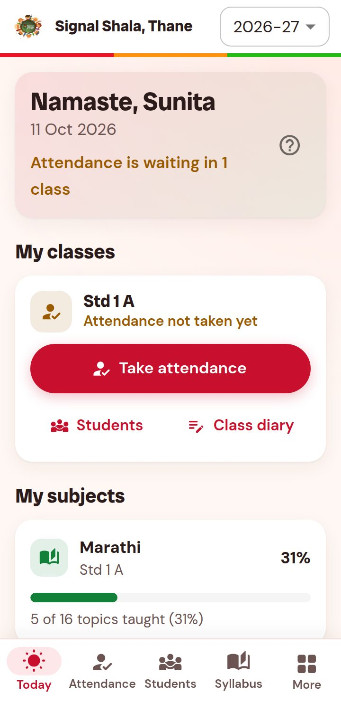
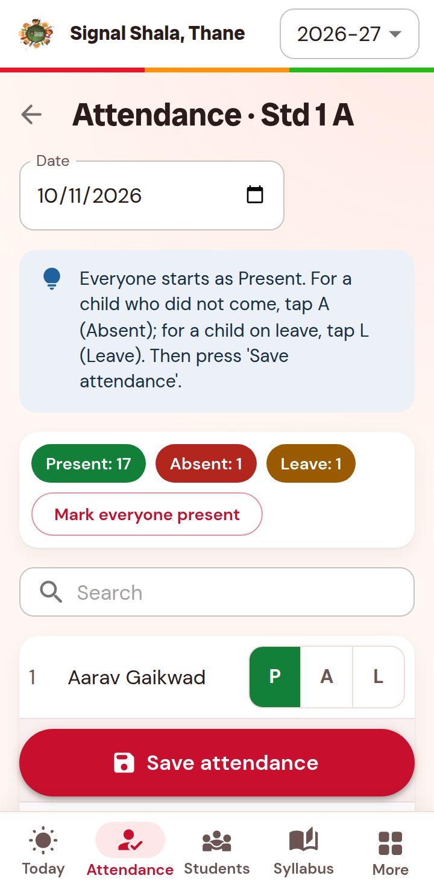
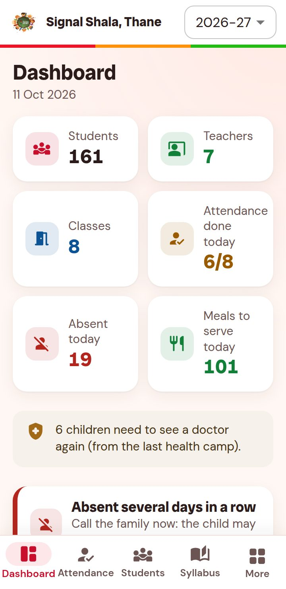
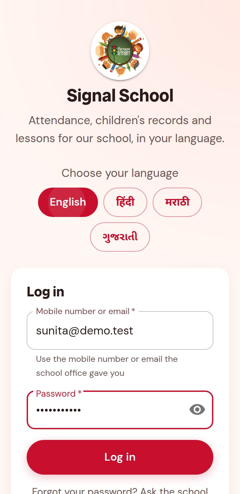
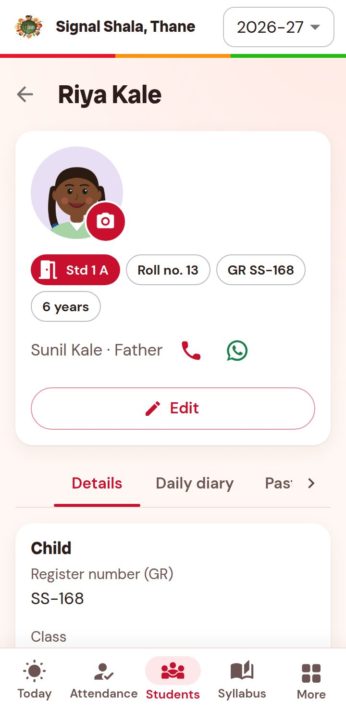
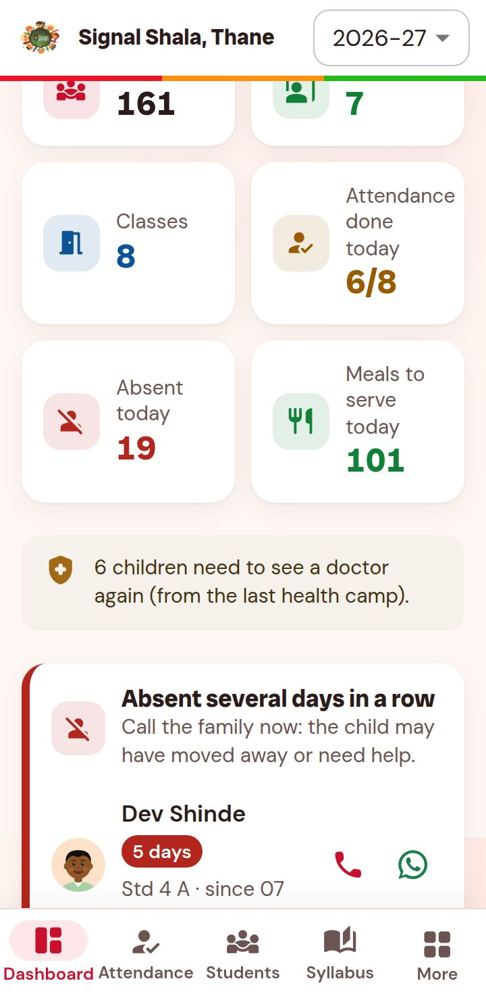
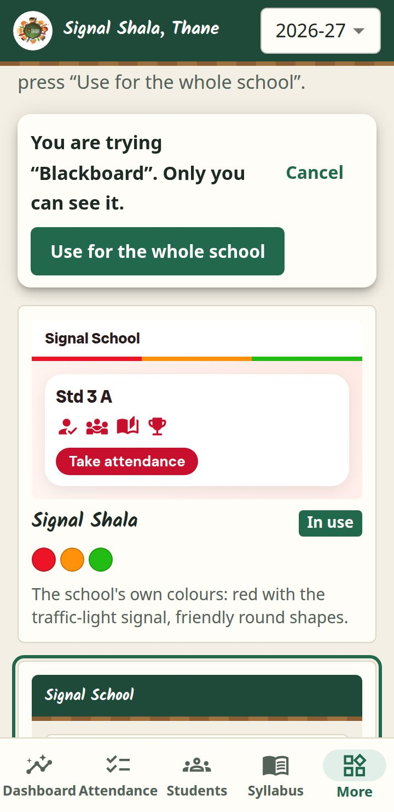
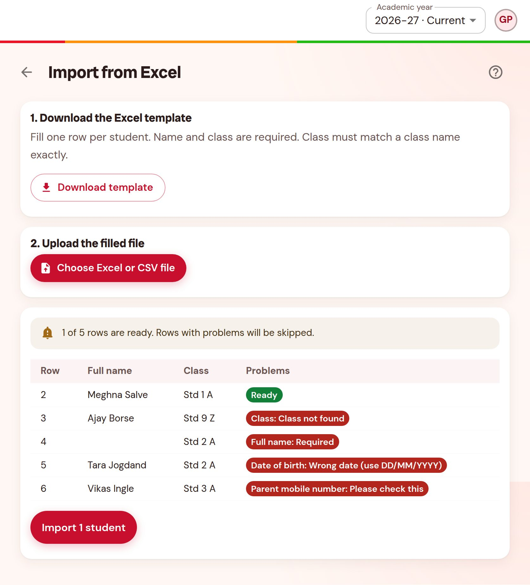

What Signal Shala is, what the app does, and how to test it step by step on a phone and a computer.



A school for children who live and work at traffic signals.
In big cities many children spend the whole day at traffic signals with their families – selling flowers, toys or books between the cars. Most of them have never been to school. Signal Shala (“signal school”) started in 2016 right under the Teen Hath Naka flyover in Thane, Maharashtra, in classrooms made from shipping containers. It is run by the trust Samarth Bharat Vyaspeeth together with the Thane Municipal Corporation.
The school gives these children lessons, a meal, health check-ups and a safe place, and helps them move on to regular schools.
Languages: Englishहिंदीमराठीગુજરાતી
| Role | First screen | What they do |
|---|---|---|
| Teacher | Today | Takes attendance of their class, writes the diary, ticks syllabus topics, enters marks, looks at children’s records. Only on a phone. |
| Office clerk | Dashboard | Admits new children, imports from Excel, records health check-ups, marks children as left, prints leaving certificates. Can see attendance but not take it. |
| Principal (admin) | Dashboard | Everything in the school: teachers and staff, classes and subjects, holidays, academic years, school settings and look, activity log. |
| Trust owner | Dashboard | Like the principal, but for all schools of the trust (Thane and Nerul), and can add schools. |
| Word | Meaning |
|---|---|
| Std 1 A | A class: “Standard 1”, division A. Balwadi is the class before Std 1 (pre-school). |
| GR / Register number | The child’s school register number, e.g. SS-168. Given automatically. |
| Roll no. | The child’s number inside the class list (in name order). |
| P · A · L · LT | Present · Absent · Leave · Late (attendance marks). |
| Academic year | School year, e.g. 2026-27 (June to April). Old years can be seen but not changed (“Closed”). A new year can be prepared early (“Planned”). |
| Look | The colours, letters and icons of the app. The principal chooses one for the whole school. |
| Re-admit | A child who left comes back: the old record is reused, nothing is lost. |
| Activity log | A list of who changed what and when (for the principal). |




On a phone the menu is the bar at the bottom: Today/Dashboard, Attendance, Students, Syllabus, More. On a computer it is on the left side.
| Day | Sheet “Test cases”, rows starting with… |
|---|---|
| Day 1 | LG (Login) and TC (Teacher) – on a phone |
| Day 2 | CL (Office clerk) and PR (Principal) – computer and phone |
| Day 3 | OW (Trust owner), LK (Looks) and GN (General) – then re-check every Fail |
A developer must be able to see the same problem. Write short, simple sentences and add a screenshot.
| Column (sheet “Bugs”) | Example |
|---|---|
| Test case ID | TC-06 |
| Screen | Take attendance · Std 1 A |
| What happened | After “Save attendance” the Today page still says “Attendance not taken yet”. |
| What should happen | Today shows “Attendance done: 18 of 19 present”. |
| Steps to see it again | 1. Log in as sunita@demo.test 2. Take attendance 3. Mark Aryan Mhatre A 4. Save 5. Go back to Today |
| Phone / Computer | Redmi 9A, Android 11, Chrome 129 |
| Screenshot file | bug-01.png (put all screenshots in one folder) |
| How bad | Blocker (cannot continue) · Major (wrong result) · Minor (works, but confusing) · Cosmetic (looks wrong only) |
Screenshot on Android: press Power + Volume down together. Also write the time when it happened.
Two made-up schools: Signal Shala, Thane (Balwadi to Std 7, red “Signal Shala” look) and Signal Shala, Nerul (Balwadi to Std 2, “Marigold” look). Every day counts as a school day in the test data.
| Role | Name | Login | Password | Notes |
|---|---|---|---|---|
| Teacher | Sunita Patil | sunita@demo.test 9820000004 | password123 | Class teacher Std 1 A (not taken today) |
| Teacher | Rahul Verma | rahul@demo.test | password123 | Std 5 A; Maths, English Std 5–7 |
| Teacher | Kavita Jadhav | kavita@demo.test | password123 | Std 2 A and Std 3 A (Std 3 A not taken today) |
| New teacher | Neha Joshi | newteacher@demo.test | Welcome@123 | First login: must choose a password |
| Inactive | Deepak Rane | inactive@demo.test | password123 | Must not be able to log in |
| Office clerk | Ganesh Pawar | clerk@demo.test | password123 | |
| Principal | Anita Deshmukh | principal@demo.test | password123 | Signal Shala, Thane |
| Trust owner | Meera Kulkarni | owner@demo.test | password123 | Both schools |
| Teacher (Nerul) | Imran Shaikh | imran@demo.test | password123 | Second school |
| Child | Class | Prepared as |
|---|---|---|
| Riya Kale | Std 1 A | Photo; parent Sunil Kale 9123400001; was in Balwadi last year |
| Aryan Mhatre | Std 1 A | No photo yet |
| Ishaan Jagtap | Std 2 A | Birthday today |
| Swati Gholap | Std 2 A | Needs a doctor again (eyes) |
| Nikhil Sonawane | Std 3 A | To be marked as left (clerk test) |
| Kiran Thakur | Std 4 A | Absent the last 5 days, low attendance; parent 9123400004 |
| Lata Bhalerao | left last year | Found with “Search all years”; to be re-admitted |
Your testing helps teachers at Signal Shala spend less time on registers and more time with the children. If something is unclear in this guide or a test case, write it in Comments – unclear things are worth fixing too.
All in the folder test-files.
| File | Use |
|---|---|
| child-photo-girl.jpg, child-photo-boy.jpg, teacher-photo.jpg | Photos to upload |
| school-logo.png | School logo |
| photo-too-big-9MB.png · not-a-photo.pdf | Must be refused (too large · wrong type) |
| students-import-5-good.xlsx · students-import-3-rows.csv | Import: all rows ready |
| students-import-with-errors.xlsx | Import: 1 ready, 4 with problems (picture below) |
This is what you should see after choosing students-import-with-errors.xlsx (test CL-08). Only the green “Ready” row is imported.
